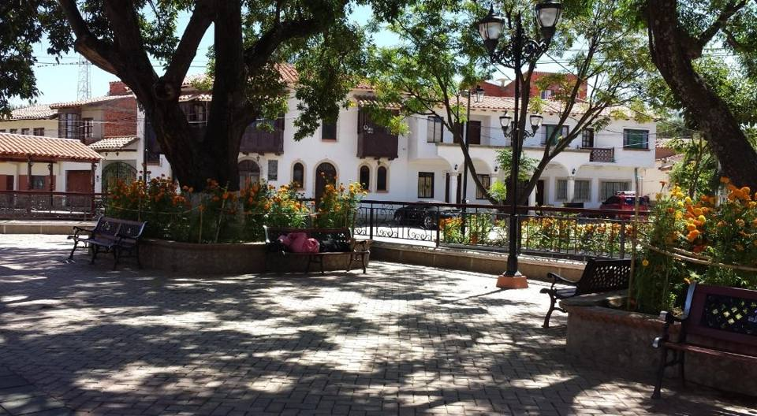
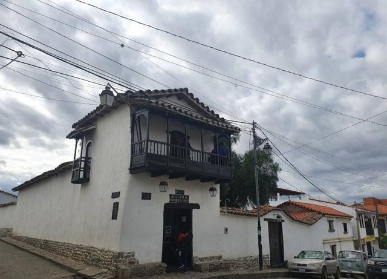
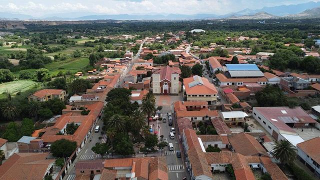
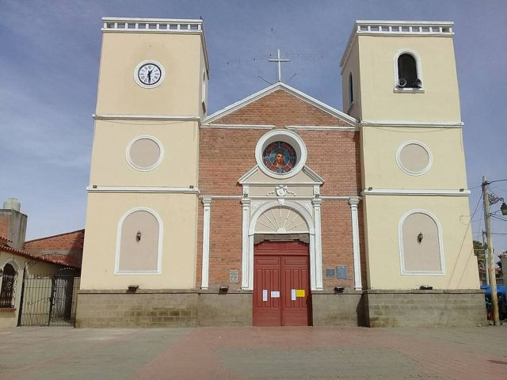
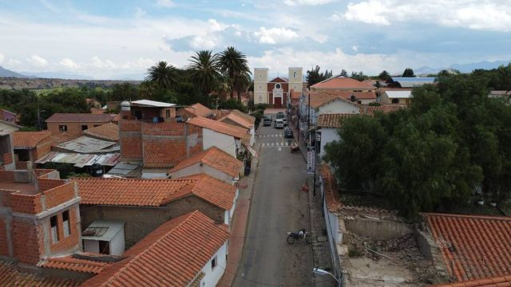
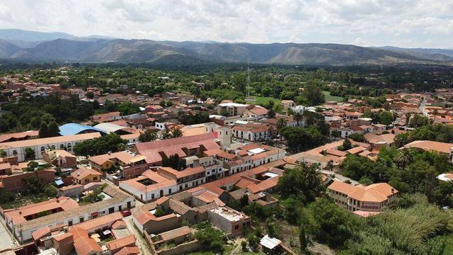

San Lorenzo
Departamento de Tarija · Cultura e historia

San Lorenzo es uno de los pueblos más lindos del valle de Tarija, con casas de balcones y una plaza sombreada. Se visita la casa de Eustaquio «Moto» Méndez, héroe de la independencia, y se prueba la comida chapaca. En agosto, la fiesta de San Lorenzo hace bailar a los chunchos.
1980 maltura
0 a 1 díapara quedarse
Qué hacer
- Casa del Moto Méndez (museo)
- Plaza, iglesia y balcones coloniales
- Fiesta de San Lorenzo en agosto
- Combinar con las cascadas de Coimata
Qué comer
- SaiceGuiso picante de carne molida y arvejas, con arroz y papas. El plato emblemático de Tarija.
- Vino de TarijaVinos de altura (hasta 2000 m): tannat, malbec, moscatel. Degustación en las bodegas del valle.
Consejo. A 20 min de Tarija en minibús.
Cómo llegar a San Lorenzo
Tarija Carretera (bus, auto) · 20 a 30 min
Minibús desde Tarija.
Fotos de San Lorenzo



_-_M%C3%A9ndez,_Bolivia.jpg){kind=link}






Otros lugares de la región
 TarijaLa Andalucía boliviana: viñedos de altura, singani y ambiente relajado.
TarijaLa Andalucía boliviana: viñedos de altura, singani y ambiente relajado. Valle de la ConcepciónLas bodegas de vino y singani de Tarija.
Valle de la ConcepciónLas bodegas de vino y singani de Tarija. CoimataRío, pozas naturales y una gran cascada, a 20 minutos de Tarija.
CoimataRío, pozas naturales y una gran cascada, a 20 minutos de Tarija. Lago San Jacinto y TomatitasUn lago entre cerros y un río para bañarse, a las puertas de Tarija.
Lago San Jacinto y TomatitasUn lago entre cerros y un río para bañarse, a las puertas de Tarija. Padcaya y ChaguayaPueblo de valle al sur de Tarija, y el gran santuario de la Virgen de Chaguaya.
Padcaya y ChaguayaPueblo de valle al sur de Tarija, y el gran santuario de la Virgen de Chaguaya. BermejoCiudad fronteriza tropical a orillas del río Bermejo, frente a Argentina.
BermejoCiudad fronteriza tropical a orillas del río Bermejo, frente a Argentina. Reserva de Sama: lagunas de TajzaraLagunas de altura, dunas y flamencos en la reserva de Sama, sobre Tarija.
Reserva de Sama: lagunas de TajzaraLagunas de altura, dunas y flamencos en la reserva de Sama, sobre Tarija. Reserva de TariquíaBosques de nubes y ríos salvajes, para trekkings de varios días con guía.
Reserva de TariquíaBosques de nubes y ríos salvajes, para trekkings de varios días con guía. Camargo (valle de Cinti)Viñedos antiguos y farallones rojos del valle de Cinti, entre Potosí y Tarija.
Camargo (valle de Cinti)Viñedos antiguos y farallones rojos del valle de Cinti, entre Potosí y Tarija. Villamontes (Gran Chaco)La puerta del Gran Chaco, a orillas del Pilcomayo y su cañón, El Angosto.
Villamontes (Gran Chaco)La puerta del Gran Chaco, a orillas del Pilcomayo y su cañón, El Angosto. YacuibaLa gran ciudad fronteriza del Chaco, frente a Argentina.
YacuibaLa gran ciudad fronteriza del Chaco, frente a Argentina. CamiriLa «capital petrolera» del Chaco, entre serranías y cultura guaraní.
CamiriLa «capital petrolera» del Chaco, entre serranías y cultura guaraní.